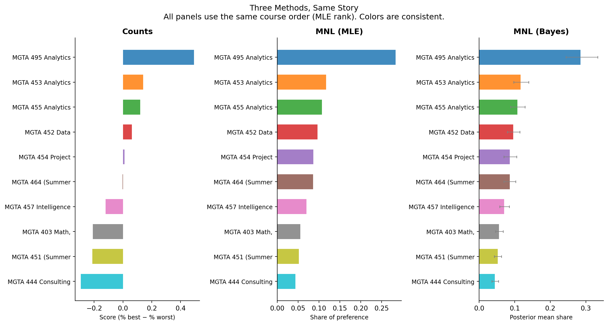

Counts, MLE, and Bayesian estimation of the MNL model
Python
Marketing Analytics
Author
Jiahui Huang
Published
May 28, 2026
Introduction
This analysis examines which MSBA core courses students prefer most, using data from a MaxDiff survey (also called Best-Worst Scaling) completed in class.
What is MaxDiff? Respondents are shown a small subset of items at a time — here, 4 courses per screen — and asked to pick the most preferred and the least preferred item from that subset. They repeat this across many screens.
Why MaxDiff instead of a 1–10 rating scale? People are inconsistent at calibrating numeric scales — one person’s “7” is another’s “9.” But humans are good at relative comparisons: “of these four, this is best and that is worst.” MaxDiff exploits this strength and avoids scale-use bias.
Three methods, one goal. We estimate preferences three ways and compare:
Counts analysis — % times picked best minus % times picked worst. Simple and transparent.
MNL via Maximum Likelihood — the multinomial logit model, fit by maximizing the likelihood. Rigorous point estimates with standard errors.
MNL via Bayesian MCMC — same model, sampled via Metropolis-Hastings. Full posterior uncertainty on any derived quantity.
All three should agree on the broad ranking. Where they differ reveals the limits of each approach.
The Data
Code
df_raw = pd.read_csv("maxdiff_design_and_choices.csv")labels = pd.read_csv("maxdiff_item_labels.csv")df_raw.columns = ["respondent", "task", "position", "item", "response"]labels = pd.read_csv("maxdiff_item_labels.csv", usecols=[0, 1], header=0)labels.columns = ["item", "course_name"]# The survey had two parts: MaxDiff (4 items per task) and a conjoint section# (2 items per task, including a mystery "item 11"). Keep only MaxDiff tasks.task_sizes = df_raw.groupby(["respondent", "task"]).size().reset_index(name="n")valid_tasks = task_sizes[task_sizes["n"] ==4][["respondent", "task"]]df = df_raw.merge(valid_tasks, on=["respondent", "task"])print(f"Raw rows: {len(df_raw)}, MaxDiff rows: {len(df)}")
Raw rows: 3910, MaxDiff rows: 2720
Code
N = df["respondent"].nunique()T = df.groupby("respondent")["task"].nunique().unique()[0]J = df.groupby(["respondent", "task"]).size().unique()[0]n_items = df["item"].nunique()print(f"Respondents (N): {N}")print(f"Tasks per respondent (T): {T}")print(f"Items per task (J): {J}")print(f"Total items: {n_items}")print(f"Total rows: {len(df)} (expected N×T×J = {N*T*J})")
Respondents (N): 85
Tasks per respondent (T): 8
Items per task (J): 4
Total items: 10
Total rows: 2720 (expected N×T×J = 2720)
Courses at the top are frequently picked as best; those at the bottom are frequently picked as worst. Courses whose CIs overlap are not clearly distinguishable from each other.
From MaxDiff Data to MNL Choices
The MNL model assigns each course \(j\) a utility \(\beta_j\). The probability that course \(b\) is picked best from a set \(\{a,b,c,d\}\) is the softmax:
Each task gives two MNL observations. Because the softmax is invariant to adding a constant to all \(\beta\)’s, we fix \(\beta_1 = 0\) and estimate the remaining 9 parameters.
Code
# Reshape to one row per tasktask_data = (df.groupby(["respondent", "task"]) .apply(lambda g: pd.Series({"items": list(g["item"]),"best_item": g.loc[g["response"] ==1, "item"].values[0],"worst_item": g.loc[g["response"] ==-1, "item"].values[0] })) .reset_index())print(f"Total tasks: {len(task_data)} (expected N×T = {N*T})")
We pass in only \(\beta_2,\ldots,\beta_{10}\) (9 free parameters); \(\beta_1=0\) is set inside the function.
Code
def log_sum_exp(v):# Subtract max for numerical stability before exponentiating m = np.max(v)return m + np.log(np.sum(np.exp(v - m)))def log_likelihood(beta_free, tasks): beta = np.concatenate([[0.0], beta_free]) # fix beta_1 = 0 ll =0.0for _, row in tasks.iterrows(): shown = [x -1for x in row["items"]] # convert to 0-indexed b = row["best_item"] -1 w = row["worst_item"] -1# Best pick: softmax over all 4 shown items ll += beta[b] - log_sum_exp(beta[shown])# Worst pick: softmax with negated utilities over remaining 3 remaining = [j for j in shown if j != b] ll += (-beta[w]) - log_sum_exp(-beta[remaining])return ll# Quick check: at beta=0, each pick is uniform so LL = n_tasks*(log(1/4)+log(1/3))test = log_likelihood(np.zeros(9), task_data)expected =len(task_data) * (np.log(1/4) + np.log(1/3))print(f"LL at beta=0: {test:.2f} (expected {expected:.2f})")
LL at beta=0: -1689.74 (expected -1689.74)
Code
# Maximize: scipy.minimize minimizes, so we negate the log-likelihoodresult = minimize( fun=lambda b: -log_likelihood(b, task_data), x0=np.zeros(9), method="BFGS", options={"disp": True})print(f"Converged: {result.success}")print(f"Final log-likelihood: {-result.fun:.2f}")
Current function value: 1572.730733
Iterations: 28
Function evaluations: 640
Gradient evaluations: 64
Converged: False
Final log-likelihood: -1572.73
/Users/squad127/Desktop/rsm-practice/spring/JH/.venv/lib/python3.13/site-packages/scipy/optimize/_minimize.py:779: OptimizeWarning: Desired error not necessarily achieved due to precision loss.
res = _minimize_bfgs(fun, x0, args, jac, callback, **options)
Code
beta_hat = np.concatenate([[0.0], result.x])# Standard errors from the inverse of the Hessian (scipy gives Hessian of the negative LL)se = np.concatenate([[0.0], np.sqrt(np.diag(result.hess_inv))])shares_mle = np.exp(beta_hat) / np.sum(np.exp(beta_hat))mle_results = pd.DataFrame({"item": range(1, 11),"beta_hat": beta_hat,"se": se,"share": shares_mle}).merge(labels, on="item").sort_values("share", ascending=False)display(mle_results[["item","course_name","beta_hat","se","share"]].round(4).reset_index(drop=True))
The broad ranking matches the counts analysis. MNL is more statistically efficient because every “shown but not picked” item is treated as evidence of lower preference, not just ignored.
MNL via Bayesian Estimation
The posterior combines the likelihood with a weakly informative prior \(\boldsymbol{\beta} \sim N(\mathbf{0},\ 10\cdot I)\):
We explore it with Metropolis-Hastings: at each step, propose \(\boldsymbol{\beta}^* = \boldsymbol{\beta} + \epsilon\) (\(\epsilon \sim N(0, \sigma^2 I)\)), accept with probability \(\min(1,\ e^{\log\pi(\boldsymbol{\beta}^*)-\log\pi(\boldsymbol{\beta})})\), repeat.
Posterior means are very close to MLE estimates, as expected. The advantage of Bayes is the credible intervals on shares — obtained by applying the softmax to each draw, with no delta method needed.
mle_order = comparison["course_name"].tolist() # canonical order = MLE rankmake_short =lambda s: "MGTA "+ s.split("MGTA ")[1].split(" ")[0] +" "+ s.split(" ")[3]colors = plt.cm.tab10(np.linspace(0, 1, 10))color_map = {name: colors[i] for i, name inenumerate(mle_order)}fig, axes = plt.subplots(1, 3, figsize=(13, 7))datasets = [ (counts_sorted, "score", "Score (% best − % worst)", "Counts"), (mle_results, "share", "Share of preference", "MNL (MLE)"), (bayes_results, "post_share", "Posterior mean share", "MNL (Bayes)"),]for ax, (data, val_col, xlabel, title) inzip(axes, datasets): data_ordered = pd.Categorical(data["course_name"], categories=list(reversed(mle_order)), ordered=True) data = data.copy() data["_order"] = data_ordered data = data.sort_values("_order") y_pos =range(len(data)) bar_colors = [color_map[n] for n in data["course_name"]] ax.barh(list(y_pos), data[val_col], color=bar_colors, alpha=0.85, height=0.6)if title =="MNL (Bayes)": ax.errorbar(data["post_share"], list(y_pos), xerr=[data["post_share"] - data["share_ci_lower"], data["share_ci_upper"] - data["post_share"]], fmt="none", color="gray", capsize=2, linewidth=0.8) ax.set_yticks(list(y_pos)) ax.set_yticklabels([make_short(n) for n in data["course_name"]], fontsize=9) ax.set_xlabel(xlabel, fontsize=9) ax.set_title(title, fontsize=12, fontweight="bold") ax.spines[["top","right"]].set_visible(False)fig.suptitle("Three Methods, Same Story\n""All panels use the same course order (MLE rank). Colors are consistent.", fontsize=12)plt.tight_layout()plt.show()

Where they agree: Top and bottom of the ranking are consistent across all three methods — when a preference signal is strong, any method catches it.
Where they disagree: The middle tier can shuffle. Counts ignores which other courses were in the same choice set, so a course that happened to face strong competition may look unfairly bad.
What MNL adds over counts: Every item shown but not picked is informative — it’s evidence of lower preference. Counts discards this; MNL uses it, giving more statistically efficient estimates.
What Bayes adds over MLE: Uncertainty on derived quantities (shares, ratios) is free — just compute the quantity per MCMC draw and take percentiles. With MLE, this requires the delta method. As models grow more complex (e.g., hierarchical individual-level parameters), the Bayesian advantage grows further.
Discussion
Across all three methods, the same broad picture emerges: MSBA students have clear favorites among their core courses. The top-ranked courses are those students consistently pick as best when shown alongside others; the bottom-ranked are frequently avoided. An academic advisor could use this to identify which courses feel most valuable to students and which might benefit from redesign.
Which method for which situation?
Counts: Best for a quick, explainable summary with no modeling required. Easy to present to any audience.
MLE MNL: Best for rigorous point estimates with standard errors. Uses the full choice structure efficiently.
Bayesian MNL: Best when uncertainty on derived quantities matters, when extending to individual-level models, or when updating estimates as new data arrives.
Caveats: This is a self-selected sample of MSBA students at UCSD Rady. Preferences likely depend on prior coursework, career goals, and year in the program. Results reflect this cohort’s preferences at this moment — not a universal statement about course quality.
What I’d explore next: A hierarchical Bayesian model estimating individual-level \(\beta_n\) for each student. This would reveal whether students cluster into preference segments (e.g., technical vs. business-oriented) and enable personalized course recommendations.